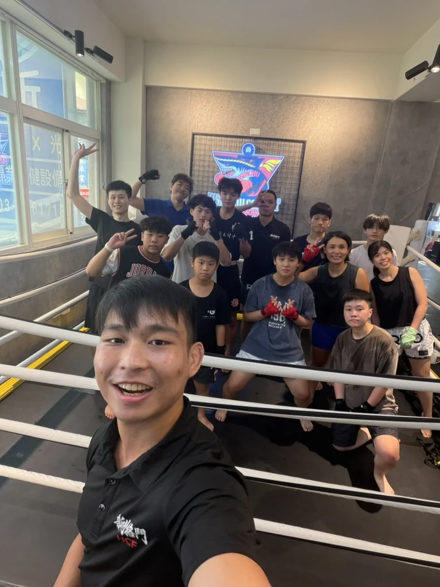

泰拳新手第一個月怎麼練把每堂課的提醒變成看得見的學習紀錄
泰拳新手第一個月不必急著學完所有招式。用四個學習階段整理站架、基本拳腿、打靶與課後回顧，附可照著填的訓練紀錄範例，幫你把目標和每週可投入天數告訴教練。
第一個月先建立可以延續的起點
第一次接觸泰拳，常見的困惑是動作名稱很多、手腳要同時配合，下課後卻只記得很忙。先把目標縮小成一堂課能理解的一件事，例如知道教練說的站架是什麼，或能分清楚某個組合的出手順序。
第一個月不是固定四堂課，也沒有人人相同的結業標準。有人每週只能來一次，有人能安排更多時間；下表是與教練討論學習順序的範例，不是 HCF 保證提供的四週套裝課程。實際內容仍依課別、經驗與教練安排。
把學習拆成四個可以回顧的階段
| 階段 | 可以關注的內容 | 下課後留下的紀錄 |
|---|---|---|
| 認識基本位置 | 站架 護手與移動時的位置 | 教練今天提醒我哪個位置 |
| 理解單一動作 | 基本拳腿的示範與回到起始位置 | 哪個動作聽懂了 哪個還想再看一次 |
| 連接簡短組合 | 依教練指令把已練過的動作連起來 | 哪個轉換容易忘記 下次想問什麼 |
| 回顧與調整 | 重新確認前面學到的重點 | 下一階段要繼續練哪一項 |
手機可左右滑動查看完整表格
同一階段可以練很多次。當教練請你回到基本動作時，可以問清楚這次希望改善哪一點，讓重複練習有明確目的。也不需要因為同班的人組合更長，就急著跳過自己的基礎。
想先理解不同練法，可以看打靶 沙包與對練的差別。完成新手階段不代表必須開始接觸對練，參與方式與條件要另外確認。
每堂課用三分鐘留下自己的紀錄
不用做複雜表格。打開手機備忘錄，記下日期、今天的練習主題、教練的一個提醒與下一個問題就足夠。以下是填寫範例，請依自己實際上課內容修改。
- 今天練什麼 基本站架與教練指定的簡短拳法組合
- 教練的提醒 每次打完後先確認手有沒有回到提醒的位置
- 我目前的感受 單一動作比較清楚 連接時還需要看示範
- 下一堂想問 我常在哪一個轉換漏掉動作 能不能再拆開練
如果得到教練與同場人員同意，也可以用短片輔助回顧；先問清楚拍攝範圍，保留教練對這段動作的說明。沒有影片也完全可以用文字記錄。
每次回顧時，找出一個比上次更清楚的地方，以及一個仍不理解的地方。進步可以是更懂口令、更敢發問，或更清楚自己的目標，不必只看速度、力量或體重。
一個禮拜願意投入幾天要先說實話
先列出真正能到館的日子，再加上交通、報到與換裝時間。若目前只有一個穩定時段，就先把這個時段確認好；如果想增加天數，再與教練討論內容怎麼銜接。不要因為別人來得多，就把自己的每個空檔都排滿。
填表時也可以區分可到館的天數與願意花時間回顧的天數。例如一週能到館一次，另一天想整理上課紀錄。這能讓教練了解你的生活安排，不會把所有運動時間都誤認成可預約的課程。
課外要做哪些練習，請先依教練確認的內容進行。這篇提供的是學習紀錄方法，不是要求你自行安排強度、對練或高難度招式的訓練處方。時間不固定的上班族，也可以參考下班後安排泰拳體驗的方式。
第一個月結束用四個問題決定下一步
- 我能說出目前在練什麼嗎 如果只能說有打拳，可以請教練幫忙整理最重要的基本觀念。
- 哪個提醒仍然反覆出現 把它當成下一階段的提問重點，而不是急著換更多動作。
- 現在的課型適合我嗎 喜歡一起練習的節奏可以繼續了解團課；想集中處理自己的問題，可以詢問私人課。
- 目前的時間安排能繼續嗎 確認實際出席情況後，再決定是否增加課程或更換時段。
如果還不知道怎麼評估教練的回饋，可以接著看私人教練體驗觀察清單。你不需要在第一個月就決定要不要比賽，先找到願意繼續學習的方式。
在 HCF 開始你的第一堂體驗
HCF 新竹格鬥位於新竹市北區林森路 301 號 2 樓。想先感受一起上課的節奏，可了解新生團課體驗 NT$400，每堂 60 分鐘；希望集中獲得個別指導，可詢問一對一體驗 NT$1,400，每堂 60 分鐘。最新費用與條件以價目表及教練確認為準。
填寫「安排我的第一堂體驗」時，把目前經驗、第一個月想了解的內容與每週可投入天數一起告訴教練。「讓教練更了解我」可以補上具體目標，例如想先把基本動作弄懂，而不是只寫想變強。
送出後依畫面到官方 LINE 確認並傳送內容，由教練核對課程與可約時段，收到確認才算完成安排。第一次到館的服裝與裝備，可以先看新手準備清單。

常見問題
第一個月一定要練到對打嗎
不需要把接觸對練當成第一個月的必達目標。可以先學基本動作與打靶，對練的參與條件、規則與意願需另外向教練確認。
每週只能來一次還可以開始嗎
可以先提出你能固定到館的時段，讓教練確認合適的課程。本文的四階段是學習順序範例，不是要求四週內完成的進度表。
看別人學得比較快要加課嗎
先讓教練了解你卡住的地方，再討論需要更多練習時間，還是需要換一種說明方式。加課前也要確認自己能否穩定出席。
第一個月就要買齊裝備嗎
可以先確認體驗與後續課程的裝備安排，再依實際需要選購。不同練習形式對裝備的要求不同，購買前先問教練。
延伸閱讀
從你的第一堂課留下第一筆紀錄
先說明你的經驗與目標 讓教練協助確認適合的開始方式
課程資訊核對於 2026 年 11 月 15 日 查看最新價目表 可約時段與預約方式由教練確認